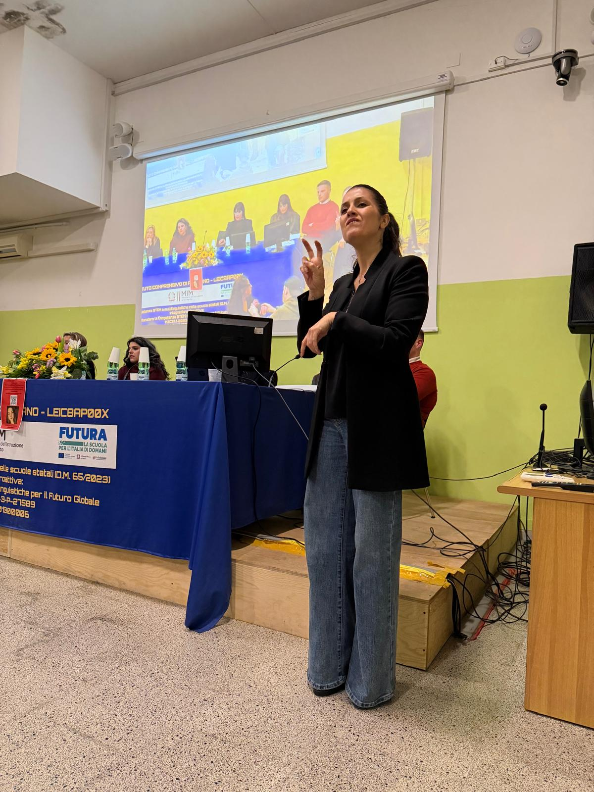

Interprete LIS · Consulente Accessibilità · Salento, Puglia
Interprete professionista di Lingua dei Segni Italiana (LIS) nel Salento e in tutta la Puglia. Affianco aziende, associazioni, enti pubblici e terzo settore per abbattere le barriere comunicative e rendere ogni servizio davvero inclusivo. Esperienza diretta con bandi regionali e progetti finanziati.
Cosa offro
Dalla presenza in sala al contenuto digitale, garantisco che il tuo messaggio raggiunga ogni persona, indipendentemente dalle barriere comunicative.
Traduzione in tempo reale per assemblee, webinar, festival e convegni. Presenza fisica o in remoto, con la massima concentrazione e professionalità per ogni tipologia di evento.
Rendi i corsi di aggiornamento, i webinar interni e i video formativi fruibili anche dai dipendenti sordi. Garantisco l'inclusione del personale in ogni momento della vita aziendale.
Sottotitolazione e adattamento video in LIS per social media e siti web, in linea con le direttive di accessibilità (WCAG). Raggiungi un pubblico più ampio e dimostra il tuo impegno per l'inclusione.
Collaboro con associazioni e cooperative che vincono bandi regionali, garantendo la figura professionale dell'interprete LIS richiesta dai progetti finanziati. Esperienza diretta con enti del terzo settore in Puglia.
Affianco le organizzazioni nell'analisi e nel miglioramento dei propri processi comunicativi per renderli accessibili alle persone sorde o ipoudenti, dalla comunicazione interna ai servizi al pubblico.
Servizio di interpretariato per colloqui di lavoro, visite mediche, incontri legali e situazioni personali dove la comunicazione precisa e riservata è fondamentale.
Processo
Un percorso semplice e trasparente, dalla prima richiesta alla consegna finale.
Analizziamo insieme il tipo di evento o materiale: contesto, linguaggio tecnico, durata e specifiche esigenze del pubblico sordo.
Studio il materiale tecnico e specialistico in anticipo, per garantire una resa fedele e fluida in ogni momento dell'evento.
Presenza all'evento con massima professionalità, oppure consegna dei file video revisionati e pronti alla pubblicazione.
Perché scegliere l'accessibilità
Rendere i tuoi servizi accessibili non è solo un obbligo normativo o un gesto etico: è un investimento strategico. Le organizzazioni inclusive ampliano il proprio pubblico potenziale, migliorano la reputazione aziendale (CSR) e si distinguono nel mercato.
In Italia, quasi 900.000 persone sono sorde o ipoudenti. Una comunità con esigenze reali e un enorme potenziale come pubblico, come clienti, come lavoratori.
Parliamone insiemeChi sono

Carica qui la tua foto
Opero come libera professionista con regolare Partita IVA, offrendo servizi di interpretariato LIS (Lingua dei Segni Italiana) caratterizzati da massima trasparenza fiscale e piena conformità normativa.
Ho conseguito la qualifica di Interprete LIS nel 2017 presso l'ENS (Ente Nazionale Sordi) di Roma e sono iscritta all'ANILIS (Associazione Nazionale Interpreti Lingua dei Segni Italiana), l'associazione di categoria riconosciuta a livello nazionale.
L'adesione all'ANILIS garantisce la mia costante formazione continua e il rigoroso rispetto del Codice Deontologico. Per le organizzazioni che trattano dati sensibili o gestiscono ambienti riservati, questo si traduce nella certezza assoluta di segreto professionale, riservatezza e neutralità in ogni contesto.
Qualifica ENS 2017 — Ente Nazionale Sordi di Roma
Iscritta ANILIS — Formazione continua e Codice Deontologico
Libera professionista con P.IVA — Piena conformità fiscale e normativa
Segreto professionale — Riservatezza e neutralità garantite in ogni contesto
Esperienze
Una rete di collaborazioni consolidate con realtà del territorio pugliese e nazionale, con particolare expertise nella gestione di progetti finanziati.
Collaborazione continuativa con enti del terzo settore in Puglia per la fornitura di servizi di interpretariato nell'ambito di progetti sociali, eventi e attività formative rivolte alle persone sorde.
Figura professionale di riferimento per associazioni vincitrice di bandi regionali che prevedono l'inclusione delle persone sorde. Esperienza nella gestione della documentazione richiesta dai bandi.
Attività di interpretariato in contesti educativi e formativi, affiancando studenti sordi e garantendo pari opportunità di accesso all'istruzione e alla formazione professionale.
Interpretariato per eventi culturali, rassegne teatrali, festival e manifestazioni pubbliche nel Salento. Rendere la cultura accessibile è una priorità e una passione personale.
Supporto in ambito medico-sanitario per garantire una comunicazione accurata e priva di ambiguità tra operatori sanitari e pazienti sordi o ipoudenti.
Collaborazioni con aziende private ed enti pubblici per l'interpretariato in convegni, assemblee dei lavoratori, colloqui e processi di selezione del personale.
Formazione
Non solo interpretariato: mi propongo come punto di riferimento per la formazione sulla comunicazione accessibile nel Salento.
Percorsi di avvicinamento alla LIS per individui, team aziendali e operatori del sociale. Impara le basi per comunicare con le persone sorde nel tuo lavoro quotidiano.
Non serve diventare interpreti: esistono strategie comunicative efficaci che chiunque può imparare per relazionarsi meglio con persone sorde o ipoudenti.
Analisi e miglioramento dei contenuti digitali, dei siti web e dei servizi aziendali per renderli conformi alle normative sull'accessibilità (WCAG, Legge Stanca).
Supporto specialistico per associazioni e cooperative che partecipano a bandi regionali o nazionali che prevedono servizi per le persone sorde.
Contatti
Che si tratti di un singolo evento o di un progetto continuativo, sono a disposizione per un confronto senza impegno.
Interprete LIS professionista nel Salento e in tutta la Puglia. Disponibile anche per eventi in tutta Italia e in remoto.
Seguimi sui social